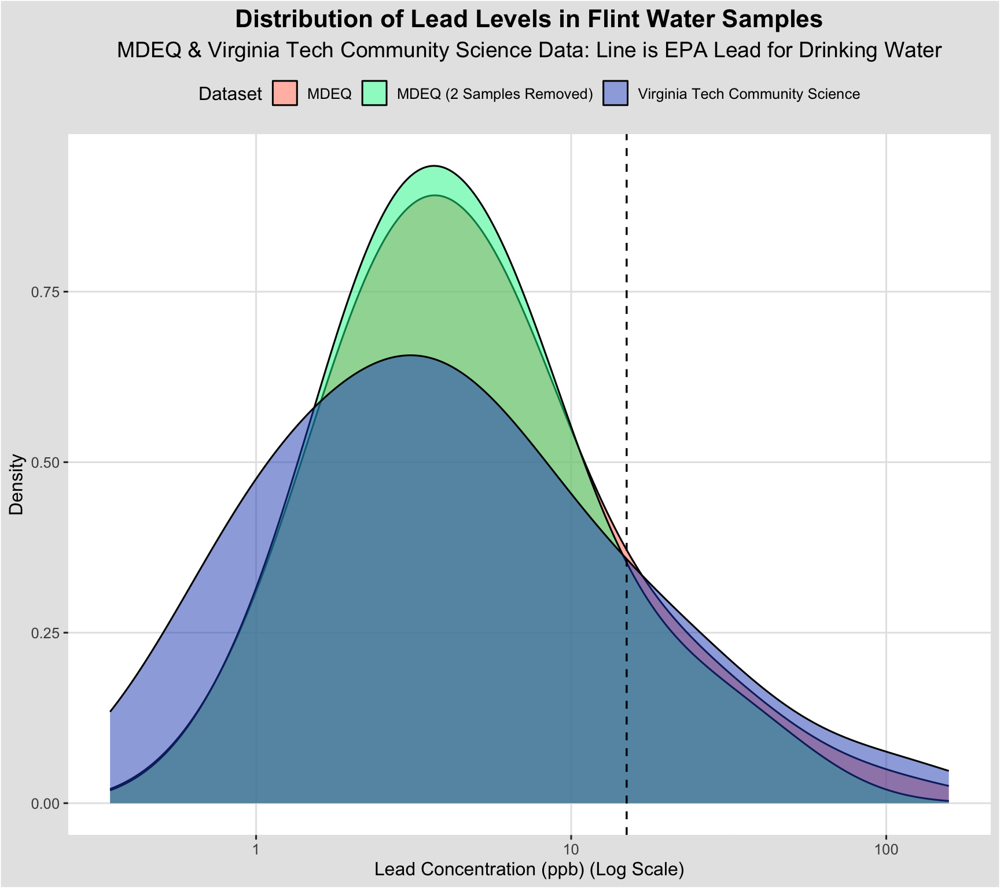

library(tidyverse)
library(tidytuesdayR)
library(here)
library(fishualize)
library(ggExtra) # for marginal plots
library(ggthemes) # for inverse grey themeTidy Tuesday Week 11
Introduction
Homework
Tidy Tuesday’s starting instead of online classes
Tidy Tuesday is an international community of R enthusiasts that create visuals from the same dataset. The goal is to practice plotting and learn something new every week. It is amazing to see how many different ways you can visualize the same data.
Tidy Tuesday’s
Instead of an online lecture, you must complete one new tidy tuesday every week for the remainder of the semester (there are 6 weeks left). Always due Tuesday at 1pm.
You must use This Weeks dataset so that everyone is using the same one. Sometimes they post datasets ahead of time.
Add a dedicated Tidy_Tuesday folder to your repo for your scripts and output.
You must have proper script structure and file structure.
You must submit in a rendered quarto file. You can use any type of output (html, github doc, pdf, whatever you want).
You must save your visual in the output folder.
You must force yourself to learn at least one NEW thing each week. This could be anything from how you tidy the data to a new geom in ggplot, new table, new way to edit the theme, new package, etc. You can also learn something new within Quarto. Use this as an opportunity to really grow your coding skills. State in your Quarto file what the new thing is that you learned.
You DO NOT have to use the entirety of the weekly tidy tuesday dataset. In fact I encourage to subset it in some interesting way because the files can be huge.
Load Libraries
Read the Data
tuesdata<-tidytuesdayR::tt_load('2025-11-04')
flint_mdeq <- tuesdata$flint_mdeq
flint_vt <- tuesdata$flint_vtglimpse(flint_mdeq) # all samples and lead levels in parts per billion (ppb), comments about removed dataRows: 71
Columns: 4
$ sample <dbl> 1, 2, 3, 4, 5, 6, 7, 8, 9, 10, 11, 12, 13, 14, 15, 16, 17, 18, …
$ lead <dbl> 0, 104, 10, 6, 5, 0, 3, 0, 13, 4, 8, 6, 2, 1, 1, 0, 2, 7, 3, 5,…
$ lead2 <dbl> 0, NA, 10, 6, 5, 0, 3, 0, 13, 4, 8, 6, 2, 1, 1, 0, 2, 7, 3, 5, …
$ notes <chr> NA, "sample removed: house had a filter", NA, NA, NA, NA, NA, N…glimpse(flint_vt) # samples and lead levels in parts per billion (ppb)Rows: 271
Columns: 2
$ sample <dbl> 1, 2, 3, 4, 5, 6, 7, 8, 9, 10, 11, 12, 13, 14, 15, 16, 17, 18, …
$ lead <dbl> 0.344, 0.349, 0.400, 0.410, 0.438, 0.475, 0.500, 0.500, 0.501, …This data on lead concentration in Flint water samples in 2015 comes from Loux and Gibson 2018 via Tidy Tuesday project from the Data Science Learning Community.
Clean the Data
# MDEQ dataset: pivot lead and lead2
flint_mdeq_long<-flint_mdeq %>%
select(sample, lead, lead2) %>%
pivot_longer(cols = c(lead, lead2),
names_to = "dataset",
values_to = "lead_ppb") %>%
drop_na(lead_ppb)
# VT dataset
flint_vt_long <- flint_vt %>%
select(sample, lead) %>%
mutate(dataset = "VT",
lead_ppb = lead) %>%
select(sample, dataset, lead_ppb)
# Combine datasets
flint_combined <- bind_rows(flint_mdeq_long, flint_vt_long) # stack them, tried joining but didnt work
glimpse(flint_combined)Rows: 411
Columns: 3
$ sample <dbl> 1, 1, 2, 3, 3, 4, 4, 5, 5, 6, 6, 7, 7, 8, 8, 9, 9, 10, 10, 11…
$ dataset <chr> "lead", "lead2", "lead", "lead", "lead2", "lead", "lead2", "l…
$ lead_ppb <dbl> 0, 0, 104, 10, 10, 6, 6, 5, 5, 0, 0, 3, 3, 0, 0, 13, 13, 4, 4…Make a Tidy Tuesday Plot
ggplot(flint_combined, aes(x = lead_ppb, fill = dataset)) +
geom_density(alpha = 0.5, adjust = 1.5) + # density distribution plot, opaqueness and bumpiness in peaks
scale_x_log10() + # log scale
# scale_color_fish_d(option = "Scarus_quoyi")
# scale_color_fish(option = "Synchiropus_splendidus",
# labels = c("lead" = "MDEQ",
# "lead2" = "MDEQ (2 Samples Removed)",
# "VT" = "Virginia Tech Community Science")) +
scale_fill_fish_d(option = "Cirrhilabrus_solorensis", direction = -1, # Use a new fish palette
labels = c("lead" = "MDEQ",
"lead2" = "MDEQ (2 Samples Removed)",
"VT" = "Virginia Tech Community Science")) +
geom_vline(xintercept = 15, linetype = "dashed", color = "black", linewidth = 0.6) + # vertical line to mark 15 ppb: the EPA’s action level for lead in drinking water
labs(title = "Distribution of Lead Levels in Flint Water Samples",
subtitle = "MDEQ & Virginia Tech Community Science Data: Line is EPA Lead for Drinking Water",
x = "Lead Concentration (ppb) (Log Scale)",
y = "Density",
fill = "Dataset", color = "Dataset") +
theme_igray() + # inverse gray theme i like
theme(legend.position = "top", # legend at top to save space
plot.title = element_text(face = "bold", hjust = 0.5, size = 16),
plot.subtitle = element_text(hjust = 0.5, size = 14))

New Thing Learned
This Tidy Tuesday, I used a new Quarto theme and tried out a new color palette, fishualize and learned how to use a density distribution plot with a log scale (geom_density).
Fishualize Palette Fish Options:
- fishualize(n = 8, option = “Hypsypops_rubicundus”, end = 0.9)
- scale_color_fish() and scale_fill_fish()
- scale_fill_fish_d(option = “Scarus_quoyi”) +
- “Synchiropus_splendidus” (oranges and browns and muted colors)
- option = “Coris_gaimard”, discrete = TRUE
- option = “Coris_gaimard”, discrete = TRUE, direction = -1
- option = “Synchiropus_splendidus”, discrete = T, alpha = 0.8 (pastels)
- option = “Synchiropus_splendidus”, discrete = T, alpha = 0.8, begin = 0.3, end = 1 (pastel yellows and blues)
- “Coris_gaimard”
- “Trimma_lantana”
- “Ostracion_cubicus”
- option = “Hypsypops_rubicundus”, direction = -1 (brighter colors)
- option = “Cirrhilabrus_solorensis”
- option = “Lepomis_megalotis”, direction = -1
- option = “Ostracion_whitleyi”, direction = -1
- option = “Zebrasoma_velifer”, trans = “sqrt”
- option = “Zebrasoma_velifer”, trans = “sqrt”, begin = 0.3, end = 1 (yellows)
- n = 256, option = “Trimma_lantana”
# ggsave(here("Tidy_Tuesday","Week11_tidytuesday", "Output","Week11_tt.png"))
# Empty your environment before you start working
# Restart R
# .rs.restartR()
# remove whole list in enviroment
# rm(list = ls())